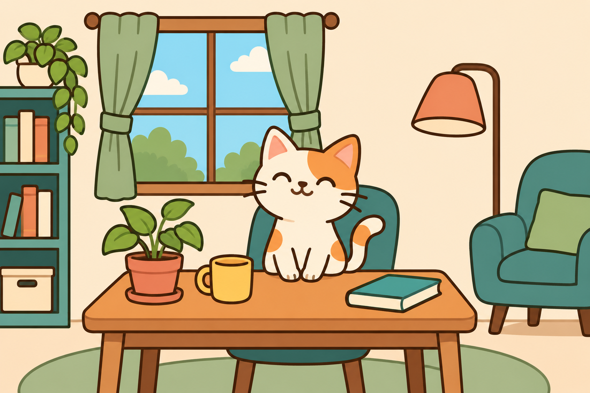

GUIDE / IMAGE DIFFERENCE
画像の差分率とは？2枚の画像の違いを数字で確かめる手順と読み方
「2枚の画像のどこが変わったのか」を目で探すのは、意外と大変です。画像比較ツールが表示する差分率と赤い重ね表示を正しく読めば、変更箇所の確認がぐっと速くなります。
差分率は何を数えているのか
デジタル画像は、色のついた小さな点（画素、ピクセル）が縦横に並んだものです。横1,536px・縦1,024pxの画像なら、1,536 × 1,024 = 1,572,864個の画素があります。一般的な画像では、1つの画素の色を赤（R）・緑（G）・青（B）の3つの値で表し、それぞれ0〜255の256段階で記録しています。
画像比較ツールの差分率は、2枚の画像の同じ位置にある画素どうしを比べ、「色が違う」と判定した画素がどれくらいの割合あるかを示す数値です。計算式は次のとおりです。
差分率（%）＝ 差分と判定した画素数 ÷ 比較した画素数 × 100
当サイトの画像比較ページに載せているサンプルは、猫のいる作業部屋のイラスト（1,536 × 1,024px）と、マグカップと本の表紙の色を変えたイラストの組み合わせです。許容値20で比較すると、差分と判定された画素は49,220個でした。したがって差分率は 49,220 ÷ 1,572,864 × 100 ≈ 3.13% です。

ここで大切なのは、差分率は「内容がどれくらい違うか」や「画質がどれくらい悪いか」を表す数値ではない、という点です。たとえば、全体が大きなスクリーンショットで1文字だけ変わった場合、変わった画素はごくわずかなので差分率は0.01%未満になることがあります。逆に、写真全体をほんの少し明るくしただけでも、ほぼすべての画素の値が変わるため、許容値が小さいと差分率は100%近くになります。差分率は「どれくらいの面積が変わったか」の目安であり、変化の重要さは赤い重ね表示を見て人が判断するもの、と考えると読み違えにくくなります。
許容値の役割と決め方
画像比較ツールでは、同じ位置の画素のR・G・Bをそれぞれ引き算し、3つの差のうちどれか1つでも「許容値より大きい」場合に、その画素を差分として数えます。許容値0なら、値が1違うだけでも差分です。許容値20なら、どの色の差も20以下の画素は同じとみなします。たとえば白（255）と、ごく薄い灰色（235）の差はちょうど20なので、許容値20では差分に数えず、許容値19では差分に数えます。
許容値が必要になるのは、見た目では区別できない小さな色の揺れが、画像には意外と多く含まれているからです。代表的な原因は次のとおりです。
- JPEGなどの非可逆圧縮：保存のたびに細かな色が少しずつ変わります。同じ画面を2回JPEGで保存しただけでも、文字の輪郭周辺に差が出ることがあります。
- 画像の再生成や再描画：別のソフトで書き出し直したり、AIで一部を編集したりすると、変更していないはずの背景にも小さな色の違いが生じることがあります。
- 表示環境の違い：異なる端末やブラウザで撮ったスクリーンショットでは、文字のなめらかさを出す処理（アンチエイリアス）の結果がわずかに異なる場合があります。
前述のサンプルも、許容値0で比較すると差分率は約99.83%になります。マグカップと本以外の部分にも、目では分からない程度の色の揺れがあるためです。許容値20にすると、その揺れが除かれ、実際に色を変えた2か所が浮かび上がります。
許容値の決め方は、次の順番がおすすめです。まず許容値0で比較し、赤い部分が画像全体に細かく散らばっているかを確認します。散らばっていなければ、そのまま結果を読みます。全体が細かく赤くなる場合は、5、10、20と少しずつ値を上げて比べ直し、目的の変更箇所だけが残る値を探します。ただし、許容値を上げすぎると、薄い色の文字や細い線の変更など、本当に確認したい小さな違いまで見落とします。最終的に採用した許容値は、結果と一緒に記録しておくと、あとで同じ条件で比較し直せます。
サイズや透明部分が違う画像の扱い
2枚の画像の大きさが違う場合、画像比較ツールは一方を拡大・縮小して合わせることはせず、左上の角をそろえて重ねます。片方の画像にしかない部分は、たとえ白く見えても差分として数えます。両方の画像が存在しない余白の部分は、比較する画素数に含めません。
具体例で確かめてみましょう。真っ白な横16px・縦8pxの画像と、真っ白な横8px・縦16pxの画像を比べると、重なるのは左上の8 × 8 = 64画素です。比較する画素数は 16 × 8 ＋ 8 × 16 − 64 = 192画素、そのうち片方にしかない128画素が差分になるので、差分率は 128 ÷ 192 × 100 ≈ 66.67% です。どちらも真っ白な画像ですが、形が違うため3分の2が差分になります。
この仕組みのため、撮影位置や切り抜き位置が数ピクセルずれているだけで、内容が同じでも広い範囲が赤くなることがあります。比較する前に、同じ大きさ・同じ範囲で用意した画像かどうかを確認してください。
透明な部分を含むPNGなどは、白い背景の上に重ねたときの見た目で比べます。そのため「完全に透明な黒」と「不透明な白」は、どちらも白く見えるので差分0になります。完全に透明な部分に隠れている色の値や、撮影日時などのメタデータは比較の対象外です。
また、ブラウザの負荷を抑えるため、比較範囲が400万画素または長辺3,000pxを超える場合は、2枚を同じ倍率で縮小してから比較します。たとえば3,200 × 2,000pxの画像どうしは、2,529 × 1,581pxに縮小して比較しました。この場合の差分率は縮小後の画素にもとづく値で、1画素程度の細かな違いは縮小で消えることがあります。
画像比較ツールでの確認手順
- 2枚の画像を選ぶ：画像比較を開き、比較元を「A」、比較先を「B」に選びます。PNG・JPEG・WebPの静止画に対応しており、画像はブラウザの中で処理されます。
- 許容値0で比較する：「比較する」を押すと、差分率と、画像Bの上に差分を薄い赤で重ねた画像が表示されます。
- 赤い場所を確認する：「画像A」「画像B」の切り替えで、赤い場所が実際にどう変わったかを見比べます。細部は「原寸で見る」で拡大して確認します。
- 必要なら許容値を調整する：全体が細かく赤くなる場合は、許容値を少しずつ上げて「比較する」を押し直します。設定を変えると古い結果は消えるので、押し忘れても古い数値が残ることはありません。
- 結果を保存する：「赤い差分画像をPNG保存」で、現在の赤の濃さを適用した画像を保存できます。「差分だけ表示」をオンにすると、差分以外が透明なPNGを保存でき、ほかの画像に重ねる素材として使えます。
赤の濃さ（10〜70%）は表示と保存の見た目だけを変える設定で、差分率には影響しません。報告書に貼る場合は濃いめ、元の画像の色も見せたい場合は薄めにすると見やすくなります。
結果を読むときの注意点
0%でもファイルが同じとは限りません。比べているのは画面に表示される色です。ファイル形式や圧縮方法、撮影日時などの情報が違っても、読み出した色が同じなら0%になります。ファイルそのものが同一かを確かめたい場合は、ハッシュ値の比較など別の方法を使ってください。
小さな差は「< 0.01%」と表示されます。差分が1画素でもあれば0.00%とは表示しないので、「0%に見えるけれど実は違う」という見落としを防げます。
位置のずれは自動で補正されません。スクロール位置やウィンドウの大きさが違うスクリーンショットでは、ほぼ全体が差分になります。比較用の画像は、同じ端末・同じ表示倍率・同じ範囲でそろえると、本当の変更箇所だけを見つけやすくなります。動画の前後のコマを比べたいときは、動画コマ分解で同じ大きさのPNGとして切り出してから比較すると便利です。
アニメーションや印刷の色は対象外です。動くGIFやアニメーションWebPは全コマを比較できません。HDR画像や印刷用の色の厳密な検査にも向いていません。用途に合わない場合は、専用のソフトをお使いください。
差分率は「どこを見ればよいか」を教えてくれる数字です。数字だけで合否を決めず、赤い表示と元の画像を見比べて判断することで、変更の見落としや思い込みを減らせます。
この比較を再現する条件と一次資料
上の公開PNG A/Bを同じ1536×1024pxで読み込み、サイズ調整・位置補正を加えず、許容値20、赤の濃さ30%、差分だけ表示オフで比較します。49,220画素／1,572,864画素、約3.13%を確認し、同じ入力の許容値だけ0にすると約99.83%です。赤の濃さは判定数を変えません。既存の作例と数値を維持しており、今回生成した形式比較画像とは別の検証です。
画素の読み出し・透明の合成・出力の標準はWHATWG Canvas仕様（画素・合成・画像出力）、PNGの仕様はW3C PNG仕様（可逆圧縮・アルファ）を参照してください。差分率の計算・許容値は当サイト独自の仕様で、これらの標準が画像の意味や合否を定義するわけではありません。形式変換による差は同一素材の保存形式比較で確認できます。